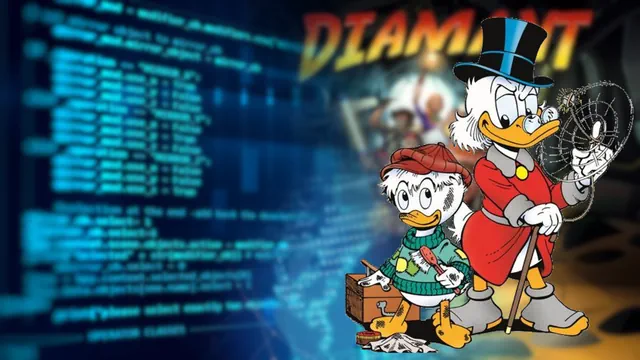

SAÉ IA pour Diamant
IA Picsou

Terminé
Langue :

Début du projet :
03/01/2023
Fin du projet :
14/01/2023
Langage
R Python
Equipe
Matthieu FARANDJIS
Tom B.
Plus sur le projet
Présentation
Après avoir implémenté le jeu Diamant sur Python, notre devoir
cette fois-ci était de créer une intelligence artificielle pouvant jouer au jeu.
Nous étions libres sur la manière de procéder pour répondre à ce véritable défi.
Non seulement, on devait fournir une IA fonctionnelle, mais en plus, elle devait être la meilleure possible.
En effet : un grand tournoi des IA était organisé.
En cela, il fallait trouver le plus vite possible l’alchimie parfaite pour répondre à ces besoins, pour un jeu mélangeant aléatoire, habilité et ruse.
C'est après ce périple dont nous avons dû mettre toute notre énergie que nous sommes heureux de présenter l'IA Picsou.
L’IA Picsou, qui tout comme le célèbre personnage de Disney, est audacieux et malin pour arriver à ses fins.
Et elle porte bien son nom !
En plus d'avoir surpassé toutes les IAs de notre classe, elle a réussi à arriver deuxième du classement de l'IUT sur plus de 30 IAs.
L'une de mes plus grandes fiertés face à des adversaires des plus redoutables.
Vous êtes curieux de connaître notre aventure ? Lisez notre rapport !
« Picsou » est un personnage appartenant à The Walt Disney Company. Ce projet n'est pas affilé.
Notre travail repose sur celui du vidéaste Laupok.
Note reçus : Performance 18,7/20
Utiliser l'IA
Notre IA n'est pas adapté pour fonctionner avec notre projet Diamant.
Je verrais pour l'adapter, mais ce n'est pas l'une de mes priorités.
-
Pour essayer l'IA, vous devez récupérer le moteur de jeu en Python, fournis par nos professeurs.
Cliquez ici pour télécharger le moteur du jeu
Note : j'ai déjà ajouté notre IA dans le fichier main.py.
-
Télécharger notre IA et placer "IA_Picsou.py" dans le dossier IA du dossier SAE_2_IA_Diamants_v2.
Comme tout .zip que vous téléchargez... Pensez à le dézipper !
-
Ouvrer le fichier main.py avec votre IDE Python favori et exécutez-le.
Le déroulement de la partie est directement indiqué dans la console.
Tout en bas, vous retrouverez le score des IA.
Par exemple :
"IA aléatoire reçoit en fin de jeu scores = '48,15,0,7'"
Signifie (si vous n'avez pas modifié l'ordre d'importation des IA):
L'IA Picsou a eu 48 diamants.
L'IA aléatoire a eu 15 diamants.
L'IA téméraire a eu 0 diamant.
L'IA trouillarde a eu 7 diamants.
Forcément, face à des IA aussi basiques, Picsou dévalise les mines !
Le moteur utilise les modules suivants :
Random
Importlib
Le projet a été créé avec l'IDE PyCharm (de JetBrains).
Si vous n'avez pas de programme pour lancer le projet Python, vous pouvez installer l'IDE EduPython.
Je recommande EduPython si vous souhaitez tester le projet sans vous embêter avec l'installation des modules ou de Python.
Sur EduPython:
Importer : Fichier > Ouvrir > main.py
Lancer le programme : Exécuter > Exécuter (Ctrl + F9)
Arrêter le programme : Exécuter > Stopper le debuggage (Ctrl + Alt + F9)
Note : les modules cités sont présents par défaut dans EduPython.
Mon rôle dans le projet
Tom m'a laissé diriger le projet.
Dans le cadre du Grand Oral de Terminal, il avait étudié les intelligences artificielles.
De mon côté, j'avais vu la vidéo de Laupok sur son IA jouant au jeu Super Mario World de Nintendo.
J'ai proposé de nous fonder sur son travail. Mais ce n'était pas facile.
Comprendre le code de quelqu'un d'autre et comprendre un autre langage sur le tas n'est pas quelque chose d'évident.
Je parle plus en détail de mon travail de réadaptation dans notre rapport.
Les connaissances de Tom ont été très importantes, et je suis certain que jamais sans lui on serait arrivé à un tel résultat.
Notre IA utilise un réseau de neurones, quelque chose d'assez complexe à appréhender.
Heureusement, il était là pour m'expliquer et me faire des remarques sur ma façon de résonner.
Idées prévues mais abandonnées
Plusieurs choses ont été prévues, mais abandonnées par manque de temps.
1. Gestion à distance du générateur de réseaux de neurones
Afin d'être plus efficaces, j'avais l'idée de laisser mon ordinateur chercher le meilleur réseau de neurones
et de suivre son avancée à distance.
Ainsi, depuis l'IUT, nous pouvions voir son avancé et tester les meilleurs réseaux et garder le meilleur.
Pour cela, j'utilisais l'outil Microsoft OneDrive qui est synchronisé avec mon ordinateur.
De temps à autre, mon ordinateur créé dans son répertoire OneDrive le fichier correspondant au meilleur réseau de neurones trouvé.
Automatiquement, le fichier est synchronisé aux serveurs de Microsoft... Et donc accessible à distance !
Le mécanisme était prêt et fonctionnel. Malheureusement, à cause des bugs, nous avons lancé la recherche d'IA à la dernière minute.
Cependant, il était également faisable par cette manière de contrôler plus ou moins à distance le générateur.
2. Le plan B de l'IA
Dans le cas où l'IA serait en difficulté, nous avons prévu que celle-ci s'adapte à la situation.
Le scénario serait qu'elle suive les mouvements du meilleur joueur afin d'estimer quel était le meilleur moment pour partir.
J'avais déjà imaginé comment il aurait pu fonctionner. Avec des exemples de la vie courante à la clé.
3. Le tournoi des réseaux de neurones
Nous avions une très grande liste des meilleurs réseaux de neurones trouvés par le générateur.
Tom a alors crée un fichier permettant de faire un tournoi pour ainsi nous permettre de récupérer le meilleur réseau.
Malheureusement... Nous avons essayé le meilleur réseau... Et il était décevant.
Le réseau utilisé faisait de notre IA une IA peureuse !
J'ai modifié le générateur et j'ai dû chercher à la main le meilleur réseau.
C'était un travail laborieux, il devait nous rester 2 heures avant de rendre le projet.
Inspiration
Comme précisé plusieurs fois, notre projet se fonde sur celui de Laupok.
Nous avons utilisé son travail dans le but de générer le réseau de neurone.
Cependant, notre travail diffère du sien. Je vous invite à aller voir notre rapport pour en savoir plus.
IA de Laupok :